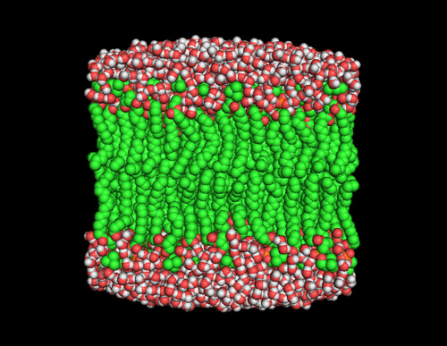

Classical MD Modules¶
Introduction¶
{kind=link}
This is a collection of the modules that have been created by E-CAM community within the area of Classical MD. This documentation is created using ReStructured Text and the git repository for the documentation source files can be found at https://gitlab.e-cam2020.eu/e-cam/E-CAM-Library which are open to contributions from E-CAM members.
In the context of E-CAM, the definition of a software module is any piece of software that could be of use to the E-CAM community and that encapsulates some additional functionality, enhanced performance or improved usability for people performing computational simulations in the domain areas of interest to us.
This definition is deliberately broader than the traditional concept of a module as defined in the semantics of most high-level programming languages and is intended to capture inter alia workflow scripts, analysis tools and test suites as well as traditional subroutines and functions. Because such E-CAM modules will form a heterogeneous collection we prefer to refer to this as an E-CAM software repository rather than a library (since the word library carries a particular meaning in the programming world). The modules do however share with the traditional computer science definition the concept of hiding the internal workings of a module behind simple and well-defined interfaces. It is probable that in many cases the modules will result from the abstraction and refactoring of useful ideas from existing codes rather than being written entirely de novo.
Perhaps more important than exactly what a module is, is how it is written and used. A final E-CAM module adheres to current best-practice programming style conventions, is well documented and comes with either regression or unit tests (and any necessary associated data). E-CAM modules should be written in such a way that they can potentially take advantage of anticipated hardware developments in the near future (and this is one of the training objectives of E-CAM).
Rare events and path sampling¶
In many simulations, we come across the challenge of bridging timescales. The desire for high resolution in space (and therefore time) is inherently in conflict with the desire to study long-time dynamics. To study molecular dynamics with atomistic detail, we must use timesteps on the order of a femtosecond. However, many problems in biological chemistry, materials science, and other fields involve events that only spontaneously occur after a millisecond or longer (for example, biomolecular conformational changes, or nucleation processes). That means that we would need around
time steps to see a single millisecond-scale event. This is the problem of “rare events” in theoretical and computational chemistry.While modern supercomputers are beginning to make it possible to obtain trajectories long enough to observe some of these processes (such as millisecond dynamics of a protein), even then, we may only find one example of a given transition. To fully characterize a transition (with proper statistics), we need many examples. This is where path sampling comes in. Path sampling approaches obtain many trajectories using a Markov chain Monte Carlo approach: An existing trajectory is perturbed (usually using a variant of the “shooting” move), and the resulting trial trajectory is accepted or rejected according to conditions that preserve the distribution of the path ensemble. As such, path sampling is Monte Carlo in the space of paths (trajectories). Conceptually, this enhances the sampling of transitions by focusing on the transition region instead of the stable states. In direct MD, trajectories spend much more time in stable states than in the transition region (exponential population differences for linear free energy differences); path sampling skips over that time in the stable states.
The main path sampling approaches used in the modules below are transition path sampling (TPS) and transition interface sampling (TIS). In practice, TPS is mainly used to characterize the mechanism of a transition, while TIS (which is more expensive than TPS) is used to calculate rates and free energy landscapes. Overviews of these methods, as well as other rare events methods, can be found in the following review articles:
- 2010 review by Bolhuis and Dellago in Reviews in Computational Chemistry
- 2008 review by Dellago and Bolhuis in Advances in Polymer Science
In addition, several other resources are available on the web to teach path sampling, including:
Since the problem of bridging timescales, which path sampling addresses, is a generic one, path sampling can be used in many fields. Indeed, there’s nothing in the methodology that even restricts it to molecular simulation. However, it is best known in the field of classical MD simulations, where path sampling methods have shown many successes, including:
- Mechanisms of complex chemical reactions, such as autoionization of water
- Mechanism of hydrophobic assembly
- Evidence that the glass transition is a first-order phase transition
- Mechanism of crystal nucleation
- Mechanism of cavitation
- Identifying new mechanisms in catalytic systems
- Characterization of the conformational dynamics networks in proteins
As computational resources become more powerful, path sampling has the promise to provide insight into rare events in larger systems, and into events with even longer timescales. For example:
- Drug/protein binding and unbinding (timescales of minutes), which is essential for predicting the efficacy of drugs
- Association processes of proteins (large systems), which is at the core of communication in biochemical pathways
- Self assembly processes for complex systems (many intermediates), which can be important for the design of new materials
Further, applying the known successes of path sampling methods to larger systems can also be quite valuable. Path sampling can shed light on the networks of conformational dynamics for large proteins and protein complexes, and on the mechanisms and rates of complex reactions and phase transitions. The range of possibilities is so broad that it is impossible to enumerate – both academics and industry will benefit greatly from having software for these methods.
The modules listed here deal with software to perform path sampling methods, as well as other approaches to rare events.
OpenPathSampling¶
Several modules were developed based on OpenPathSampling (OPS). These include modules that have been incorporated into the core of OPS, as well as some that remain separate projects. The modules that were incorporated into the core are:
- Path Density for OpenPathSampling
- Direct MD (on-the-fly) flux/rate in OpenPathSampling
- Improved input for OPS networks
- New WHAM code
- Flux/Rate Analysis in OpenPathSampling
- OpenPathSampling Snapshot Features
- Two-Way Shooting in OpenPathSampling
- Committor Analysis in OpenPathSampling
- OPS Channel Analysis
- OPS New TIS Analysis
- Resampling Statistics
The modules that are based on OPS, but remain separate, are:
Nine of these modules were part of E-CAM Deliverable 1.2. Those modules provided improvements and new features in software for trajectory sampling and for studying the thermodynamics and kinetics of rare events.
Pilot Projects¶
One of primary activity of E-CAM is to engage with pilot projects with industrial partners. These projects are conceived together with the partner and typically are to facilitate or improve the scope of computational simulation within the partner. The related code development for the pilot projects are open source (where the licence of the underlying software allows this) and are described in the modules associated with the pilot projects.
Extended Software Development Workshops (ESDWs)¶
The first ESDW for the Classical MD workpackage was held in Traunkirchen, Austria, in November 2016, with a follow-up to be held in Vienna in April 2017. The following modules have been produced:
The second ESDW for the Classical MD workpackage was held in Leiden, Holland, in August 2017. The following modules have been produced: